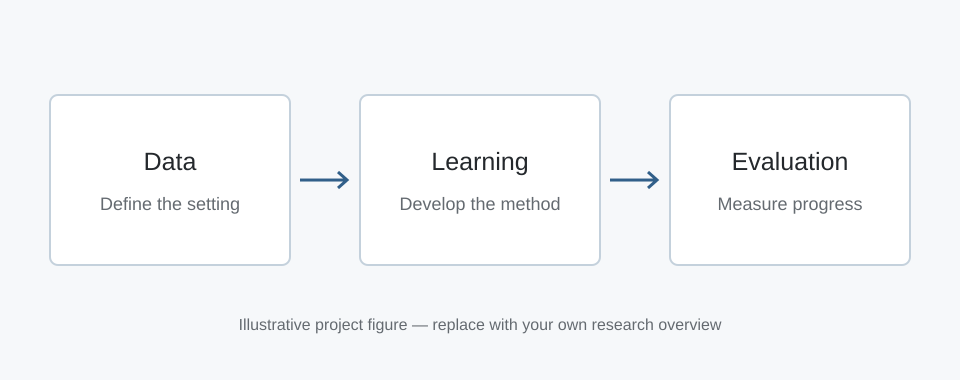

STEP 1
Define the problem
Describe the task, the assumptions, and the setting in which your method operates.
Illustrative project page
A clear, concise subtitle for your research project.
Example University · Example AI Lab

This page provides a reusable structure for presenting a research project. Introduce the problem and its importance, describe the key idea behind your approach, and summarize the main evidence supporting your conclusions. Replace this illustrative text with your own abstract, keeping enough context for readers who have not yet opened the paper.
STEP 1
Describe the task, the assumptions, and the setting in which your method operates.
STEP 2
Explain the main mechanism and how it differs from a useful baseline.
STEP 3
Summarize the evaluation protocol, key findings, and practical limitations.
@misc{yourname2026example,
title = {Example Research Project},
author = {Your Name and Coauthor One and Coauthor Two},
year = {2026},
note = {Illustrative example}
}